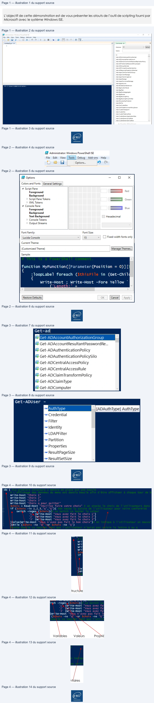

Transcription du document du Drive TSSR. La mise en forme est adaptée au Web ; les compléments IA du portail sont présentés séparément.
Initiation à PowerShell
Démonstration 01 du module 5
L’objectif de cette démonstration est de vous présenter les atouts de l’outil de scripting fourni par
Microsoft avec le système Windows ISE.
•
ISE est l’acronyme de « Integrated Scripting Environnement », ce qui signifie qu’il s’agit d’un outil
totalement dédié à la réalisation de scripts.
•
Seul le langage PowerShell est supporté.
Trois zones de travail :
•
La zone de Script qui va contenir les lignes de codes
•
La console de sortie qui va afficher les résultats des commandes du script.
•
La fenêtre de commande qui répertorie toutes les commandes disponibles actuellement.
La personnalisation des zones de travail se fait par le menu Tools - Options
Page 1/4
© ENI – Tous droits réservés
CJ
File
Edit
View
Tools
Debug
Add-ons
Help
D & H
#
or
CRT HIER:
[Œ].
Untitled2.ps1 X
|
|
| Commands x
x
1
Modules: | All
+
|
|Refresh
Name:
rs
Add-ADCentralAccessPolicyMember
Add-ADComputerServiceAccount
Add-ADDomainControlierPasswordReplicationPolicy
Add-ADFineGrainedPasswordPolicySubject
Add-ADGroupMember
Add-ADPrincipalGroupMembership
Add-ADResourcePropertyListMember
Add-AppvClientConnectionGroup
Add-AppiClientPackage
Add-AppwPublishingServer
Adé-ApprPackage
Add-AppyProvisionedPackage
Add-AppxVolume
PS C:\Users\Administrator>
Add-BCDstaCacneExtension
Add-BgpCustomRoute
Add-BgpPeer
Add-BgpRouteAggregate
Add-BgpRouter
Add-BgpRoutingPolicy
Add-BgpRoutingPolicyForPeer
Add-BitLockerkeyProtector
Add-BitsFile
Add-CauClusterRole
Add-CertificateEnrolimentPolicyServer
Add-ClusterCheckpoint
Add-ClusterDisk
Add-ClusterFileServerRole
Add-ClusterGenericApplicationRole
Add-ClusterGenericScriptRoie
Add-ClusterGenericServiceRole
Initiation à PowerShell
Parmi toutes les options disponibles, la coloration syntaxique, la police et la taille de police sont
regroupées dans le premier onglet.
La complétion automatique permet de fournir l’ensemble des CmdLets ou des paramètres
disponibles.
Page 2/4
© ENI – Tous droits réservés
E Administrator Windows PowerShell ISE
File
Edit
View [Tools
| Debug
Add-ons
Help
‘a &
=}
Options...
i)
& Options
—
O
x
Colors and Fonts |General Settings
4 Script Pane
=
.
Foreground
mi
= oo
Background
b
Script Pane Tokens
—
Green
b XML Tokens
4 Console Pane
=
__
Foreground
mm
51:
Background
Text Background
Hexadecimal
b
Console Tokens
l
Qutput Streams
Font Family:
Font Size:
Lucida Console
«|
[45
« | (J Fixed-width fonts only
Current Theme:
Sample:
function MyFunction([Parameter(Position
= 0)][:
:loopLabel foreach
(
in
(Get-child
Write-Host
; Write-Host -Fore Yellow
~
Initiation à PowerShell
Les paramètres disponibles sont affichés à la suite de la CmdLet saisie.
En fonction du thème choisi, la coloration des éléments de votre script va se faire
automatiquement. La mise en place de ce code couleur permet en un coup d’œil de se rendre
compte d’une erreur de syntaxe.
Page 3/4
© ENI – Tous droits réservés
Get-ad
&} Get-ADAccountResultantPasswordRe...
Eÿ Get-ADAuthenticationPolicy
=} Get-ADAuthenticationPolicySilo
&} Get-ADCentralAccessPolicy
&} Get-ADCentralAccessRule
Eÿ Get-ADClaimTransformPolicy
Eÿ Get-ADClaimType
Eÿ Get-ADComputer
Get-ADUser
-
“1 Credential
- Filter
“4 Identity
- | DAPFilter
4 Partition
“4 Properties
1 ResultPagesize
“44 ResultSetSize
Initiation à PowerShell
Structures
Variables
Valeurs
Propriétés
Commentaires
Page 4/4
© ENI – Tous droits réservés
ido
{
Write-host
Write-host
Write-host
Write-host
= Read-Host
|
if
¢
-in 1,2,3,
'
df
1
switch -regex
(
df
{Write-Host
}
{write-Host
}
{write-Host
}
|
}}else{write-Host
}
[
while
(¢
-ne
-or
-ne
)
En
